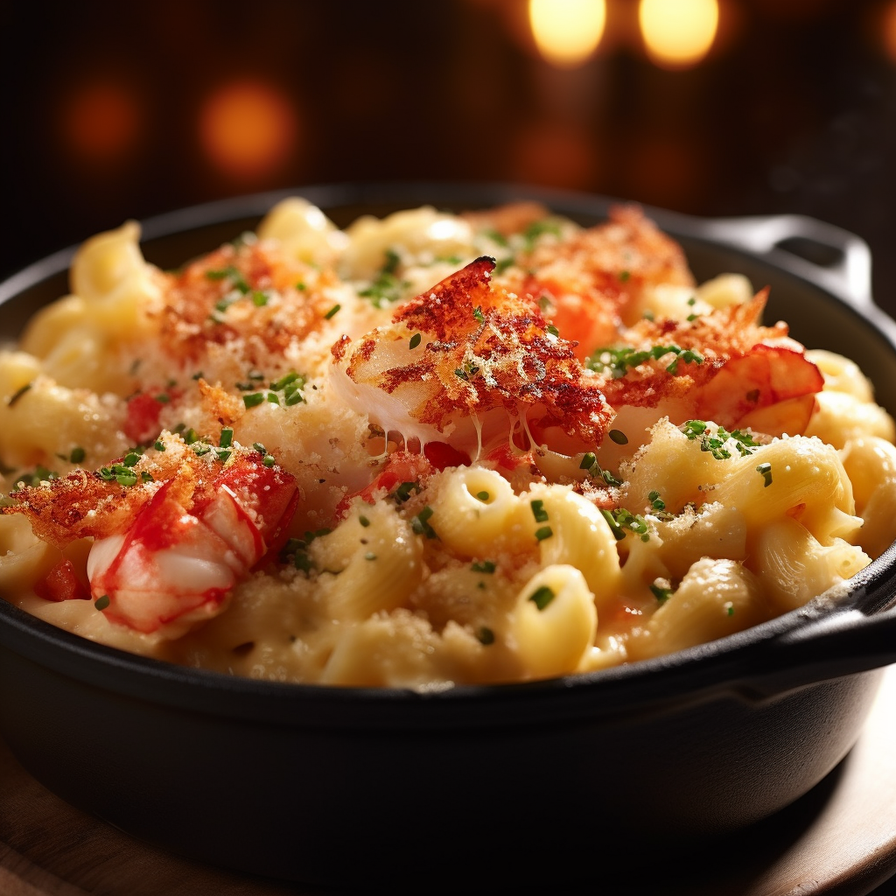

Lobster Mac N Cheese

Description
- 1 lb elbow macaroni
- 1 cooked lobster
- 6 tbsp unsalted butter
- 1/2 cup all-purpose flour
- 4 cups whole milk
- 2 cups shredded cheddar cheese
- 1/2 cup grated Parmesan cheese
- 1/2 cup panko bread crumbs
- Salt and Pepper to taste
- Preheat oven to 400°F (200°C).
- Cook macaroni according to package instructions. Drain and set aside.
- In a large skillet, melt 4 tbsp of butter over medium heat.
- Add flour and whisk until smooth.
- Gradually pour in milk, whisking constantly.
- Continue whisking until sauce thickens, about 7-10 minutes.
- Remove from heat and stir in cheddar and Parmesan cheeses until fully melted.
- Fold in lobster meat and macaroni.
- Pour mixture into a 9×13 inch baking dish.
- Melt remaining 2 tbsp of butter and mix with panko breadcrumbs.
- Sprinkle mixture over the top of the mac and cheese.
- Bake in preheated oven for 20-25 minutes until golden brown and bubbly.
- Let cool for a few minutes before serving.